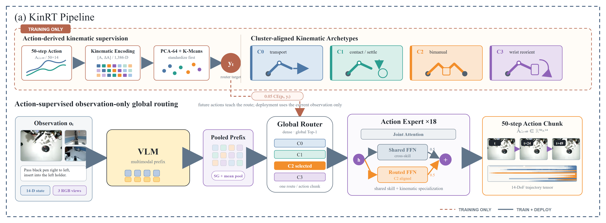
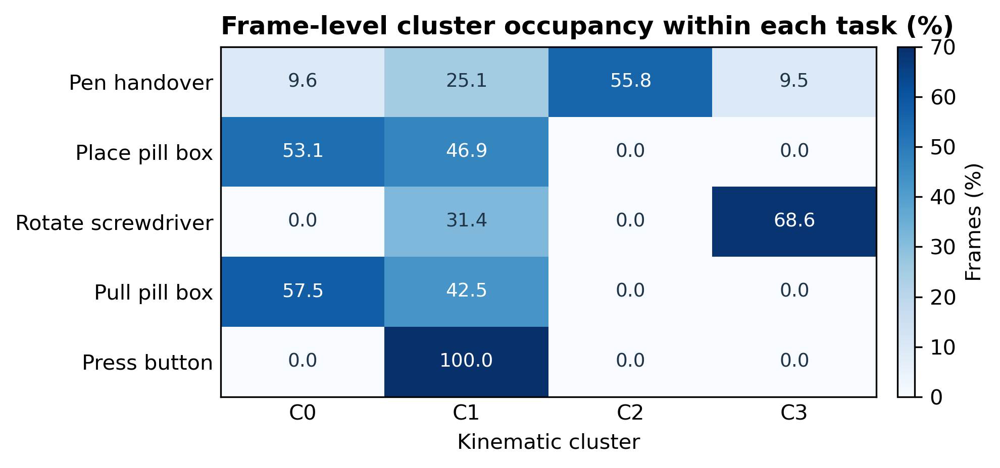

Method reference
How KinRT works
KinRT converts future action structure into supervised routing labels during training, then predicts the route from the current observation alone. FULL and LoRA retain this exact information flow.
Define the method precisely
KinRT is the source implementation in which offline action-motion clusters supervise a learned global router over residual feed-forward experts in the PI0.5 or PI0 action expert. The router is trained against frame-aligned hard labels. Those labels and future actions are not available at inference time.

Use KinRT for the routing method. Append FULL or LoRA only when identifying the optimization regime or a concrete checkpoint.
Construct frame-aligned kinematic labels
For every dataset frame, the label generator takes a future action chunk of length 50. Episode tails are padded by repeating the final action. In the reported chunk_velocity setting, it concatenates the flattened chunk and its first temporal difference.
chunk = a[t : t + 50]
velocity = diff(chunk, axis=time)
feature = concat(flatten(chunk), flatten(velocity))
# For a 14-D action: 50 * 14 + 49 * 14 = 1,386 values.The generator fits a standard scaler, an Incremental PCA projection to 64 dimensions, and KMeans with four clusters. It writes router_labels.npy indexed by the dataset's global index, plus the sample indices, cluster model, centers, episode summary, and run metadata.
| Reported RoboTwin label artifact | Value |
|---|---|
| Episodes / frames | 800 / 162,545 |
| Raw / PCA dimensions | 1,386 / 64 |
| Clusters | 4 |
| Cluster counts | 59,018; 74,748; 7,182; 21,597 |
| Label SHA-256 | bceda7104ee949d37c9872a50c06842a111387ad5b63eb9011d50e19b33b256a |
Route from the observation prefix
PI0.5 encodes visual inputs, language, and proprioceptive state into prefix tokens. KinRT applies a validity mask and mean-pools those tokens into one vector per sample. A dense router produces four logits, selects one expert, and broadcasts the selected route across action tokens and action-expert transformer depth.
Vision, prompt, and state features.
One routing context vector per sample.
One global expert decision.
The selected expert is a residual branch.
The ordinary dense feed-forward path remains active. The routed expert output is added as a residual pathway; it does not replace the shared feed-forward computation.
Optimize action prediction and routing together
L_total = L_flow_matching + 0.05 * L_router_cross_entropyThe active reported configs set load-balance, entropy, contrastive, dead-expert, action-gradient, and action-loss weighting coefficients to zero. Balanced replacement sampling uses class count to the power -0.5, reducing label imbalance without forcing a uniform stream.
Enabling an auxiliary coefficient or changing sampling semantics produces a different experiment, even when the config retains a KinRT name.
Separate method identity from parameterization
| Setting | kinrt_full | kinrt_lora |
|---|---|---|
| KinRT labels, router, experts, Top-K | Same | Same |
| PaliGemma branch | gemma_2b | gemma_2b_lora, rank 32 |
| Action-expert branch | gemma_300m | gemma_300m_lora, rank 64 |
| Frozen base parameters | No | Yes |
| Steps / batch | 10,000 / 32 | 10,000 / 32 |
| FSDP devices | 1 | 2 |
| Save interval | 500 | 1,000 |
| EMA | Disabled | Disabled |
The retained code comments use this distinction: KinRT names the method; the nearby sentence states whether all base parameters or only LoRA/router/expert parameters are trainable.
Follow the implementation path
| Stage | Authoritative file | Responsibility |
|---|---|---|
| Label generation | scripts/generate_router_labels.py | Chunk features, PCA, KMeans, global-index labels |
| Data loading | src/openpi/training/data_loader.py | Label alignment and balanced sampling |
| Loss integration | src/openpi/models/pi0.py | Pooled context and supervised router loss |
| Routing | src/openpi/models/gemma.py | Top-1 decision and residual routed FFNs |
| Training | scripts/train.py | Optimization and checkpoints |
| Inference | pi_model.py | Policy session and action chunks |
| RoboTwin evaluation | script/eval_policy*.py | Episodes, metrics, failures, telemetry |
Respect interpretation limits
- Cluster IDs are not stable semantics across independently fitted KMeans models.
- A dominant cluster in one task does not establish one-expert-per-task specialization.
- FULL and LoRA checkpoints are separate training outcomes and must be named explicitly in results.
- Router telemetry is meaningful only with the matching checkpoint, label model, and dataset revision.
- Observation-only routing must be verified at deployment; future actions or labels must not enter the inference request.
